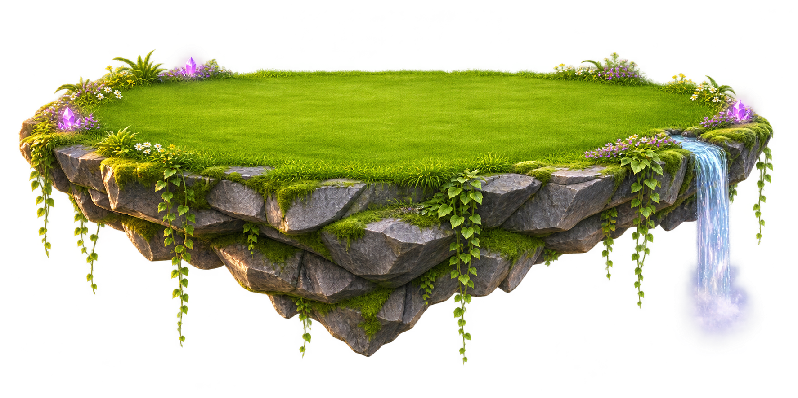

Your floating island
A level grassy surface for stacking, with stone underneath, hanging vines, crystals and a little waterfall. Each player gets their own island and a small wizard guiding the falling blocks.

A level grassy surface for stacking, with stone underneath, hanging vines, crystals and a little waterfall. Each player gets their own island and a small wizard guiding the falling blocks.
